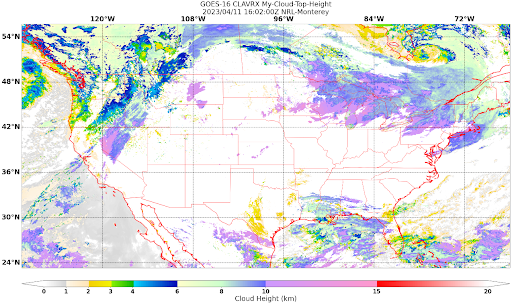

Distribution Statement
Extend GeoIPS with new Products#
This section discusses how to create multiple products for CLAVR-x data, specifically Cloud-Top-Height, Cloud-Base-Height, and Cloud-Depth. Products are the cornerstone plugin for GeoIPS, as they define how to produce a specific product as a combination of other plugins. Products use other plugins, such as an algorithm, colormapper, interpolater, etc. to generate the correct result.
We will now go hands on in creating a product for CLAVR-x Cloud-Top-Height.
First off, change directories to your product plugins directory.
cd $MY_PKG_DIR/$MY_PKG_NAME/plugins/yaml/products
Now, create a file called
my_clavrx_products.yaml, which we’ll fill in soon. Before we add any code let’s discuss some of the top level attributes that are required in any GeoIPS plugin:interface,family, anddocstring.
Please see documentation for additional info on these GeoIPS required attributes
Creating a GeoIPS Product Plugin#
The code snippet shown below shows properties required in every GeoIPS plugin, YAML or Module-based. These properties help GeoIPS define what type of plugin you are developing and also defines what schema your plugin will be validated against.
Copy and paste the code shown below into my_clavrx_products.yaml.
interface: products
family: list
name: my_clavrx_products
docstring: |
CLAVR-x imagery products
Now we’ll update the spec portion of the yaml file to support our new product plugin.
spec is a container for the ‘specification’ of your yaml plugin. In this case, it
contains a list of products, as shown below. Denoted by the family: list
property shown above, this yaml file will contain a list of products, which can be of
length 1 if you so desire.
Copy and paste the code block below under your to the end of your file. spec should be right under the docstring you wrote, with no tabs behind it. YAML is a whitespace-based coding language, similar to Python in that aspect. Feel free to remove the comments, as they just describe what each property does.
spec:
products:
- name: My-Cloud-Top-Height # The name of the product you're defining (can be anything)
source_names: [clavrx] # Defined as metadata in the corresponding reader
docstring: | # Pipe says to YAML this will be a multiline comment, can be anything
CLAVR-x Cloud Top Height
product_defaults: Cloud-Height # See the Product Defaults section for more info
spec: # Variables are the neccessary variables which are needed to produce your product
variables: ["cld_height_acha", "latitude", "longitude"]
To use your product that you just created, you’ll need to create a bash script that
implements run_procflow (run-process-workflow). This is a script which defines the
process-workflow needed to generate your product. We’ll keep this short for now, but you
are able to strictly define how you want your product to be created, as well as what
format you’d like it outputted as. You can also define the sector you’d like your data
to be plotted on, as well as compare the output product to a validated product if wanted.
GeoIPS is called via a command line interface (CLI). The main command that you will use is
run_procflow which will run your data through the selected procflow using the specified
plugins. It’s easiest to do this via a script, and scripts are stored in your plugin
package’s tests/ directory because they can be used later to regression test your
package.
Creating a Script to Visualize Your Product#
We’ll now create a test script to generate an image for the product you just created.
Change directories into your scripts directory.
cd $MY_PKG_DIR/tests/scripts
Create a bash file called clavrx.conus_annotated.my-cloud-top-height.sh and edit it to include the codeblock below.
run_procflow \
$GEOIPS_TESTDATA_DIR/test_data_clavrx/data/goes16_2023101_1600/clavrx_OR_ABI-L1b-RadF-M6C01_G16_s20231011600207.level2.hdf \
--procflow single_source \
--reader_name clavrx_hdf4 \
--product_name My-Cloud-Top-Height \
--output_formatter imagery_annotated \
--filename_formatter geoips_fname \
--minimum_coverage 0 \
--sector_list conus
ss_retval=$?
As shown above, we define which procflow we want to use, which reader, what product will be displayed, how to output it, which filename formatter will be used, the minimum coverage needed to create an output (% based), as well as the sector used to plot the data. Many more items can be added if wanted. If you’d like some examples of that, feel free to peruse the GeoIPS Scripts Directory.
Once these changes have been created, we can run our test script to produce Cloud Top Height Imagery. To do so, run your script using the line shown below.
$MY_PKG_DIR/tests/scripts/clavrx.conus_annotated.my-cloud-top-height.sh
This will write some log output. If your script succeeded it will end with INTERACTIVE: Return Value 0. To view your output, look for a line that says SINGLESOURCESUCCESS. Open the PNG file, it should look like the image below.
{kind=link}
Okay! We’ve developed a plugin which produces CLAVR-x Cloud Top Height. This is nice, but what if we want to extend our plugin to produce Cloud Base Height? What about Cloud Depth? Using the method shown above, we’re going to extend our my_clavrx_products.yaml to produce just that.
Using your definition of My-Cloud-Top-Height as an example, create a product definition for My-Cloud-Base-Height.
cd $MY_PKG_DIR/$MY_PKG_NAME/plugins/yaml/products
- Now, edit my_clavrx_products.yaml. Here are some helpful hints:
The relevant variable in the CLAVR-x output file (and the equivalent GeoIPS reader) is called “cld_height_base”
The Cloud-Height product_default can be used to simplify this product definition (or you can DIY or override if you’d like!)
The correct products implementation for ‘my_clavrx_products.yaml’ is shown below. Hopefully, you didn’t have to make any changes after seeing this! Developing products, and other types of plugins should be somewhat intuitive after completing this tutorial.
interface: products
family: list
name: my_clavrx_products
docstring: |
CLAVR-x imagery products
spec:
products:
- name: My-Cloud-Top-Height
source_names: [clavrx]
docstring: |
CLAVR-x Cloud Top Height
product_defaults: Cloud-Height
spec:
variables: ["cld_height_acha", "latitude", "longitude"]
- name: My-Cloud-Base-Height
source_names: [clavrx]
docstring: |
CLAVR-x Cloud Base Height
product_defaults: Cloud-Height
spec:
variables: ["cld_height_base", "latitude", "longitude"]
Now that we have products for both Cloud Top Height and Cloud Base Height, we can develop a product that produces Cloud Depth. To do so, use your definitions of My-Cloud-Top-Height and My-Cloud-Base-Height as examples, create a product definition for My-Cloud-Depth.
cd $MY_PKG_DIR/$MY_PKG_NAME/plugins/yaml/products
- Edit my_clavrx_products.yaml. Here is a helful hint to get you started:
We will define Cloud Depth for this tutorial as the difference between CTH and CBH
interface: products
family: list
name: my_clavrx_products
docstring: |
CLAVR-x imagery products
spec:
products:
- name: My-Cloud-Top-Height
source_names: [clavrx]
docstring: |
CLAVR-x Cloud Top Height
product_defaults: Cloud-Height
spec:
variables: ["cld_height_acha", "latitude", "longitude"]
- name: My-Cloud-Base-Height
source_names: [clavrx]
docstring: |
CLAVR-x Cloud Base Height
product_defaults: Cloud-Height
spec:
variables: ["cld_height_base", "latitude", "longitude"]
- name: My-Cloud-Depth
source_names: [clavrx]
docstring: |
CLAVR-x Cloud Depth
product_defaults: Cloud-Height
spec:
variables: ["cld_height_acha", "cld_height_base", "latitude", "longitude"]
We now have two variables, but if we examine the Cloud-Height Product Defaults
we see that it uses the single_channel algorithm. This doesn’t work for our use case,
since the single_channel algorithm just manipulates a single data variable and
plots it. Therefore, we need a new algorithm! See the
Algorithms Section to keep moving forward with this turorial.
Using Your Cloud Depth Product#
Note: Before moving forward in this section, make sure you’ve completed creating a new algorithm. We are going to modify our Cloud Depth product to use the algorithm we just created.
Now that we’ve created our cloud depth algorithm, we need to implement it in our cloud
depth product. As shown in the Product Defaults Section,
we can override the product defaults specified to our own specification. To do so,
modify My-Cloud-Depth product in my_clavrx_products.yaml to the code block shown
below.
interface: products
family: list
name: my_clavrx_products
docstring: |
CLAVR-x imagery products
spec:
products:
- name: My-Cloud-Top-Height
source_names: [clavrx]
docstring: |
CLAVR-x Cloud Top Height
product_defaults: Cloud-Height
spec:
variables: ["cld_height_acha", "latitude", "longitude"]
- name: My-Cloud-Base-Height
source_names: [clavrx]
docstring: |
CLAVR-x Cloud Base Height
product_defaults: Cloud-Height
spec:
variables: ["cld_height_base", "latitude", "longitude"]
- name: My-Cloud-Depth
source_names: [clavrx]
docstring: |
CLAVR-x Cloud Depth
product_defaults: Cloud-Height
spec:
variables: ["cld_height_acha", "cld_height_base", "latitude", "longitude"]
algorithm:
plugin:
name: my_cloud_depth
arguments:
output_data_range: [0, 20]
scale_factor: 0.001
The changes shown above modify My-Cloud-Depth to use our my_cloud_depth algorithm
that we created. If we left this portion unchanged, My-Cloud-Depth would use the
single_channel algorithm, which is unfit for our purposes. We also added two other
arguments, output_data_range ands scale_factor, which override the Cloud-Height
product defaults arguments for those two variables. Output data range of [0, 20] states
that our data will be in the range of zero to twenty, and the scale factor says that we
are scaling our data to be in kilometers.
To use this modified My-Cloud-Depth product, follow the series of commands. We will be creating a new test script which implements our new changes.
cd $MY_PKG_DIR/tests/scripts
cp clavrx.conus_annotated.my-cloud-top-height.sh clavrx.conus_annotated.my-cloud-depth.sh
Now we need to edit clavrx.conus_annotated.my-cloud-depth.sh to implement
My-Cloud-Depth rather than My-Cloud-Top-Height. Your new test script should look
like the code shown below.
run_procflow \
$GEOIPS_TESTDATA_DIR/test_data_clavrx/data/goes16_2023101_1600/clavrx_OR_ABI-L1b-RadF-M6C01_G16_s20231011600207.level2.hdf \
--procflow single_source \
--reader_name clavrx_hdf4 \
--product_name My-Cloud-Depth \
--output_formatter imagery_annotated \
--filename_formatter geoips_fname \
--minimum_coverage 0 \
--sector_list conus
ss_retval=$?
Nice! Now all we need to do is run our script. This will display Cloud Depth over the CONUS sector. To do so, run the command below.
$MY_PKG_DIR/tests/scripts/clavrx.conus_annotated.my-cloud-depth.sh
This will output a bunch of log output. If your script succeeded it will end with INFO: Return Value 0. To view your output, look for a line that says SINGLESOURCESUCCESS. Open the PNG file to view your Cloud Depth Image! It should look like the image shown below.